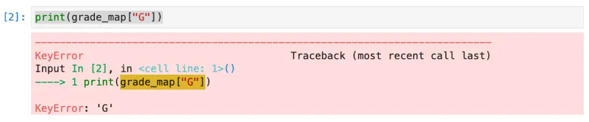

Python Dictionaries for Beginners: A Complete Lesson With Exercises
Python dictionaries are a popular and easy-to-use built-in type. Among the collection data types – the types programmers use to store and retrieve other objects – dictionaries are probably the most widely used class next to Python lists. Using Python dictionaries is simple to learn, but mastering them and remembering the syntax when you need it requires some practice, so we have several exercises at the end of this tutorial lesson. These are available as Jupyter Notebooks and feature both the exercises and a solutions guide if you need more help.
Although this is a beginner tutorial, cover dictionaries in some depth here. For more beginner-focused Python articles, see our list, Python for Beginners.
Introduction
It’s easy to understand the role of dictionaries in Python if you think about the role of dictionaries in finding the meaning of an unfamiliar word or learning a language. Unlike novels or screenplays, or even Python blogs, language dictionaries are books that are arranged to make looking up entries fast and convenient. It’s a rare person who would read a dictionary cover to cover, though it can be done. Most people would prefer to use them as a lookup tool.
Python dictionaries are unlike natural language dictionaries in being somewhat more precise. In a Python dictionary, each key refers to exactly one object. (Note that it is possible to map to an object that contains a set of other objects, like a set or list). In natural language dictionaries, in contrast, the word bat could either be a flying mammal that lives in a cave or a tool for playing baseball.
Creating Python Dictionaries
There are several ways to create a Python dictionary, but the most common is to use a dictionary literal. (If you don’t have a good reason to do it another way, this is the method I would recommend). A dictionary literal is a set of key/value pairs surrounded by curly brackets. For example, let’s say we wanted to be able to map letter grades to the minimum average score one would need to reach this grade. An “F” would be represented by not appearing in the dictionary.
grade_map = {"A": 90, "B": 80, "C": 70, "D": 60}
In this example, each letter grade is a key. Between each key and value, we have a colon, “:”. Separating each key-value pair, we have either a comma or (to end the dictionary) a closing curly brace. More formally, we can write the syntax this way:
{key1: value1, …, keyN:valueN}
When we want to look up a value, we use the dictionary name, followed by the key name in square brackets:
grade_map = {"A": 90, "B": 80, "C": 70, "D": 60}
min_grade_for_a = grade_map["A"]
print(min_grade_for_a)
Output:
90
The Append Method in Python Dictionaries?
Beginners to Python who have learned about lists and the list.append method sometimes search in vain for a method of the same name in Python dictionaries. In place of append, you can add to Python dictionaries using an assignment operator and the same brackets operator we used to look up an item before.
Let’s say we want to add an “F” grade to our grade_map since we’re unhappy that we didn’t explicitly document that you need at least a zero to get an “F.” Our original map looks like this: {"A": 90, "B": 80, "C": 70, "D": 60}. Here’s how we would add an “F” grade to it:
grade_map["F"] = 0
# print the new map
print(grade_map)
Output:
{'A': 90, 'B': 80, 'C': 70, 'D': 60, 'F': 0}
A Less Common Way to Create a Dictionary
We’ve seen that we can use dictionary literals to create a dictionary in the form {key1: value1, key2: value2, ...}. However, it’s also possible to create a dictionary using the dict() constructor. We can combine this with setting values individually if we wish:
good_grades = dict()
good_grades["A"] = 90
good_grades["B"] = 80
print(good_grades)
Output:
{'A': 90, 'B': 80}
This way of creating dictionaries is much less common and is not recommended if you know the values your dictionary should have in advance. For dictionaries that need to be created dynamically, there’s another mechanism we can use, but let’s put off discussion of that for a bit as it’s a little bit more advanced. We have some basics and a bit of theory to get through first.
Python Dictionaries vs. Python Lists
As we’re learning about the basics of Python dictionaries, it’s helpful to compare them to Python lists, especially to understand when we would prefer one over the other. The main question to ask yourself when selecting a list or a dictionary is whether you need to process a whole group of elements or whether what you need is to be able to retrieve a single element quickly. If you need to operate on all the elements, then a list is probably what you want. If you’re looking up elements, you should definitely prefer a Python dictionary.
For example, suppose you were writing a program to print out labels for the people you send holiday cards to. In this case, each name and address might be an object, and you are trying to make sure you send everyone a card. The last part gives away that you’re processing every item, and the goal of the group of items is to get processed as a group. Therefore, a list is an appropriate collection to use, and indeed, we typically call such a group of holiday cards a “list” even if we’re not programmers.
But now, suppose that for each item we were processing, we had to translate a state name into a state abbreviation. Perhaps our address objects contained New England state names, but the full names – “Rhode Island,” “Massachusetts,” “Connecticut” – wouldn’t fit on the card. We could have another list of objects with state names and their abbreviations to abbreviate the state names, but then we’d have to have a nested loop to look up the state name by name. The nested loop would slow down processing considerably.
A much better approach would be something like the following pseudo-code:
states = {"Rhode Island", "RI, "Connecticut": "CT", ... }
for address in addresses:
address.state_abreviation = states[address.long_state_name]
print(address)
We have to deal with every address anyway, so the outer loop is fine. Using a dictionary means the lookup happens quickly. So again, use dictionary objects when you need to look up a single value rapidly.
Another difference between lists and dictionaries is the type of data they hold. For lists, the elements of the list can be any Python object – strings, numbers, dates, booleans, custom types, you name it! For dictionaries, the values can be of any Python type, but the keys have two other requirements, both of which are fulfilled by some basic types such as strings and numbers that are commonly used as keys. First, the key must be hashable; that is to say, it must be possible to efficiently turn int into a number using the “__hash__” method. (Double-underbar “magic” methods like this are typically called internally, though you can call them directly if you’re curious).
Secondly, the type must be immutable. In other words, you shouldn’t be able to change the object’s value. This second requirement means, for example, that you can’t use lists, sets, or dictionaries as keys to a dictionary.
The reason for this limitation is that Python dictionaries are implemented as a hashtable. Values are stored based on the hashed value of the key. Since the __hash__ method is very efficient to call, lookups are based on a single key very fast.
Dealing With Missing Data
Earlier, we showed one method for getting data, using a key in square brackets.
grade_map = {"A": 90, "B": 80, "C": 70, "D": 60}
print(grade_map["A"])
Output:
90
While this method works if you know the key exists in the dictionary, it raises a KeyError if the key is not in the dictionary:

The way to avoid this error if you’re unsure what keys the dictionary contains is to use the dictionary’s get method instead. This method takes a key to retrieve, and instead of raising an error if the key is not in the dictionary, it returns none by default. As an option, you can pass a second argument to the get method to return a different default.
print(grade_map.get("G"))
print(grade_map.get("G", 0))
Output:
None
0
Of course, the get method only returns the default if the key is not found. Otherwise, it returns the value that was associated with the key
print(grade_map.get("A"))
Output:
90
Iterating Dictionaries
Although dictionaries are designed to make single lookups efficient, you can also iterate through them if you need to do so. There are a couple of ways to do this. The dictionary type has two methods: keys() and values(), which returns a list only of keys or only of values, respectively. Using each key in the keys() list, we can always look up the value and iterate the list this way:
super_powers = {"Superman": "strength", "Flash": "speed", "Sue Storm": "invisiblity"}
for key in super_powers.keys():
print(f"{key}'s superpower is {super_powers[key]}.")
Output:
Superman's superpower is strength.
Flash's superpower is speed.
Sue Storm's superpower is invisiblity.
Another way to do this is to use the dictionary’s items() method. Here’s what the items() method returns:
print(super_powers.items())
Output:
dict_items([('Superman', 'strength'), ('Flash', 'speed'), ('Sue Storm', 'invisiblity')])
This object looks like it contains a list of tuples, so this means we can unpack each item easily:
super_powers = {"Superman": "strength", "Flash": "speed", "Sue Storm": "invisiblity"}
for key, value in super_powers.items():
print(f"{key}'s superpower is {value}.")
The output here is the same as earlier:
Superman's superpower is strength.
Flash's superpower is speed.
Sue Storm's superpower is invisiblity.
Some Slightly More Advanced Dictionary Topics
When To Use Python Defaultdict
The built-in dict class works well for most use cases. As we’ve seen, if you need to retrieve a value that may not be present, you can use the dictionary “get” method to specify a default. Another typical case is where you need that default value to be present even when creating a value. For example, let’s say that you’re implementing a counter of words in a given text.
For simplicity, we assume for now that the string has no punctuation and is all lowercase. Here’s how the implementation might look given a standard dict class
def count_words(text):
"""returns a dictionary with the count of each word in the text"""
counts = {}
text = text.lower()
words = text.split(" ")
for word in words:
if counts.get(word) == None:
counts[word] = 1
else:
counts[word] = counts[word] + 1
return counts
text = "this is the thing that this is not the thing that it isn't."
presult = count_words(text)
for key, value in result.items():
print(f"{key}: {value}")
Output:
this: 2
is: 2
the: 2
thing: 2
that: 2
not: 1
it: 1
isn't.: 1
This code works fine, but note that we have to check the word against the dictionary, then based on whether it’s there or not, either set it to the starter value of one or increment it. We can simplify this code using defaultdict. Default dict takes a callable, which takes no parameters and returns a default value in all cases, including on assignment. The callable can be a lambda function or even a class constructor. In our code, we take advantage that the default value for an “int” is zero, so passing int uses the constructor to set a value to zero. From there, we can simply increment it by one each time. So if we haven’t seen the word before, this means that the first time we see it, it’s set to a one.
from collections import defaultdict
def count_words(text):
"""returns a defaultdict with the count of each word in the text"""
counts = defaultdict(int)
text = text.lower()
words = text.split(" ")
for word in words:
counts[word] = counts[word] + 1
return counts
text = "this is the thing that this is not the thing that it isn't."
result = count_words(text)
for key, value in result.items():
print(f"{key}: {value}")
The output of this program is identical to the dict version, above.
You can write the program above even more simply using the Counter class, but we wanted to show one of the use cases for defaultdict. There’s another use case for defaultdict for which it’s even more well suited. Imagine that you have a list of students’ last names and their grades on certain tests. To find an average for each student, you need to prepare a dictionary where the key is the last name, and the value is a list of all the student’s grades.
from collections import defaultdict
def make_grade_list(all_grades):
"""Given a list of tuples of names and grades, return a dictionary of each student and all their grades"""
grades = defaultdict(list)
for student, grade in all_grades:
grades[student].append(grade)
return grades
all_grades = [("Smith", 97), ("Lockwood", 76), ("Jones", 82), ("Jones", 100), ("Lockwood", 65), ("Smith", 100)]
result = make_grade_list(all_grades)
for key, value in result.items():
print(f"{key}: {value}")
Output:
Smith: [97, 100]
Lockwood: [76, 65]
Jones: [82, 100]
It looks like that poor Lockwood fellow could use some extra help.
Dictionary Comprehensions
A dictionary comprehension is similar to a list comprehension, except it creates a dictionary instead of a list. Dictionary comprehensions are an advanced topic, but they can be very useful when working with dictionaries. Like list comprehensions, dictionary comprehensions are a concise way to create dictionaries from sets of elements. Here is the general form of the syntax:
{key: value for [code to get key and value] in [some list of values] }
They are convenient when you need to create a dictionary based on the values of another dictionary. For example, suppose you have a dictionary that maps country codes to country names. If you want to create a dictionary that maps country names to country codes, you can use a dictionary comprehension:
# The original dictionary:
codes_to_countries = {"US": "United States", "CA": "Canada", "China": "CN", "Colombia": "CO", "Mexico": "MX"}
# Use a dictionary comprehension to swap keys and values:
countries_to_codes = {value: key for key, value in codes_to_countries.items()}
print(countries_to_codes)
Output:
{'United States': 'US', 'Canada': 'CA', 'CN': 'China', 'CO': 'Colombia', 'MX': 'Mexico'}
This comprehension created a dictionary with the same keys and values as the original dictionary but with the keys and values swapped.
Python Dictionary Exercises
Here are several questions and coding exercises to help you practice your dictionary skills. They’re also available as an online notebook.
Dictionary Exercises (Notebook)
When should you prefer a dictionary over a list?
Given the following elements and their symbols, create a dictionary that allows you to look up the symbol given the element name as a key. Assume the element name and symbol names have the cases as shown. Name the dictionary “elements”.
Hydrogen H
Bismuth Bi
Iron Fe
Carbon C
Silicon Si
Helium He
Write a for loop that loops over the elements dictionary you created in exercise 2, above. Print each item as “Symbol => Name” on a single line.
Assuming the elements dictionary is in scope (declared globally, for example, or you can add it to the function), write a function that takes an element name and returns the symbol name. If the element name is not found, return the string “NOT FOUND”.
def find_symbol(element: str):
"""Todo: Replace None with your code"""
None
Add the following elements and their symbols to the elements table.
Oxygen O
Sodium Na
Zinc Zn
The elements table allows you to look up symbols, given an element name. How could you create a dictionary that would allow you to look up the element name, given a symbol name?
You have a list of sensor IDs and sensor readings, as given in the next cell (the sensor ID comes first in each pair). Also shown is the code for iterating through the list. Write the code to create a dictionary that maps each unique sensor ID to a list of readings related to it, as shown in the following pseudocode:
{sensor_id: [reading1, reading2, ...], ...}Name the dictionary “readings”.
reading_list = [("id001", 93.9), ("id001", 93.9), ("id007", 33.5), ("id001", 22.0), ("id003", 55.1), ("id007", 22.10)]
for reading in reading_list:
print(f"id = {reading[0]}, reading = {reading[1]}")
Write the code to create a dictionary named “squares”. Each key should be a number between one and ten, and each value should be the square of the number.
Since you know the squares dictionary contains as keys the numbers 1-10, write the code to retrieve and print the square of 7 using an operator.
What is wrong with the following code? You can run it if needed to refresh your memory about this topic:
grades = {[99, 95]: "Kalea", [85, 100]: "Antoine"}
grades
You May Also Like
Learning C++ and Python: The Perfect Duo for Success
Python Format Strings: Beginner to Expert